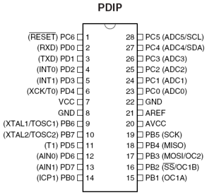

//-------------------------------------------------------------------------
DDR = 1 - работает на выход
DDR = 0 - работает на вход
PORT = 1 && DDR = 1 - на выходе "1"
PORT = 0 && DDR = 1 - на выходе "0"
PORT = 1 && DDR = 0 - PullUp
PORT = 0 && DDR = 0 - Hi-Z (Default)
Hi-Z - режим высокоимпедансного входа. Все вентили разомкнуты, а сопротивление порта стремится к бесконечности. Подходит для считывания состояние порта, но при этом очень высокая чувствительность к помехам. При неподключенном выводе уровень будет постоянно переключаться от наводок.
PullUp - выход с подтяжкой к логической единице. В этом состоянии пин подтягивается к шине питания резистотром 100 кОм, что на неподключенном выводе всегда дает единицу, защищая пин от помех. Но при замыкании вывода на землю, его состояние сбросится на ноль, что удобно при использовании кнопок.
/* Копипаст этого блока в ST2 без изменений отлично встает без смещений.
ATMEGA8A
__________
(RESET) PC6 -| |- PC5 (ADC5/SCL)
(RXD) PD0 -| |- PC4 (ADC4/SDA)
(TXD) PD1 -| |- PC3 (ADC3)
(INT0) PD2 -| |- PC2 (ADC2)
(INT1) PD3 -| |- PC1 (ADC1)
(XCK/T0) PD4 -| |- PC0 (ADC0)
VCC -| |- GND
GND -| |- AREF
(OSC1) PB6 -| |- AVCC
(OSC2) PB7 -| |- PB5 (SCK)
(T1) PD5 -| |- PB4 (MISO)
(AIN0) PD6 -| |- PB3 (MOSI/OC2)
(AIN1) PD7 -| |- PB2 (SS/OC1B)
(ICP1) PB0 -|__________|- PB1 (OC1A)
*/